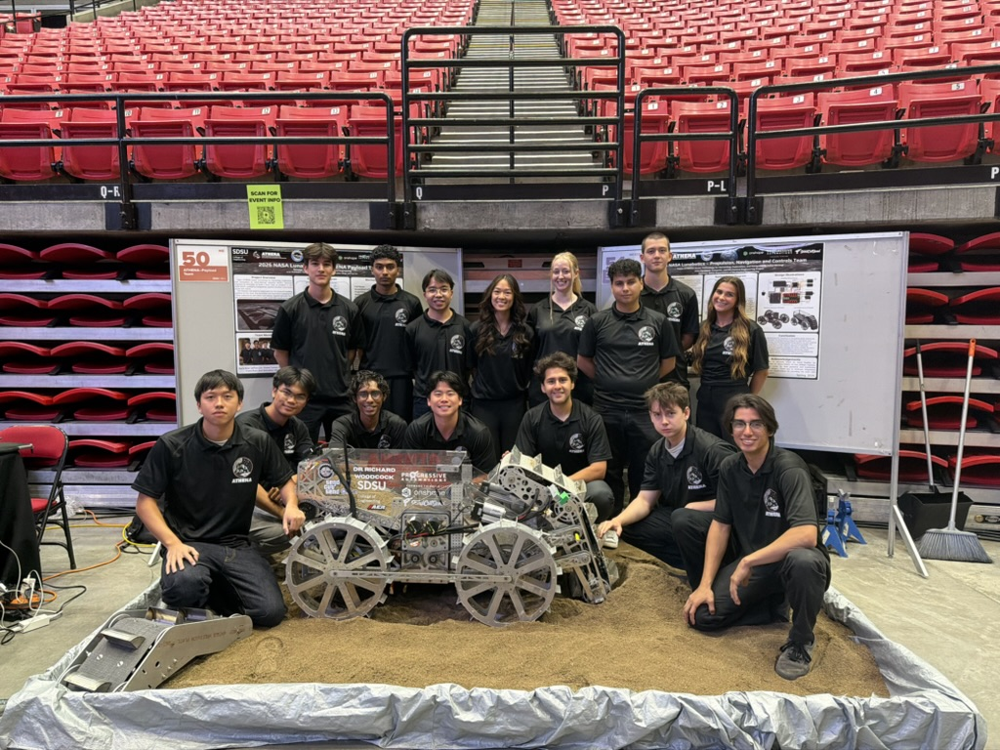
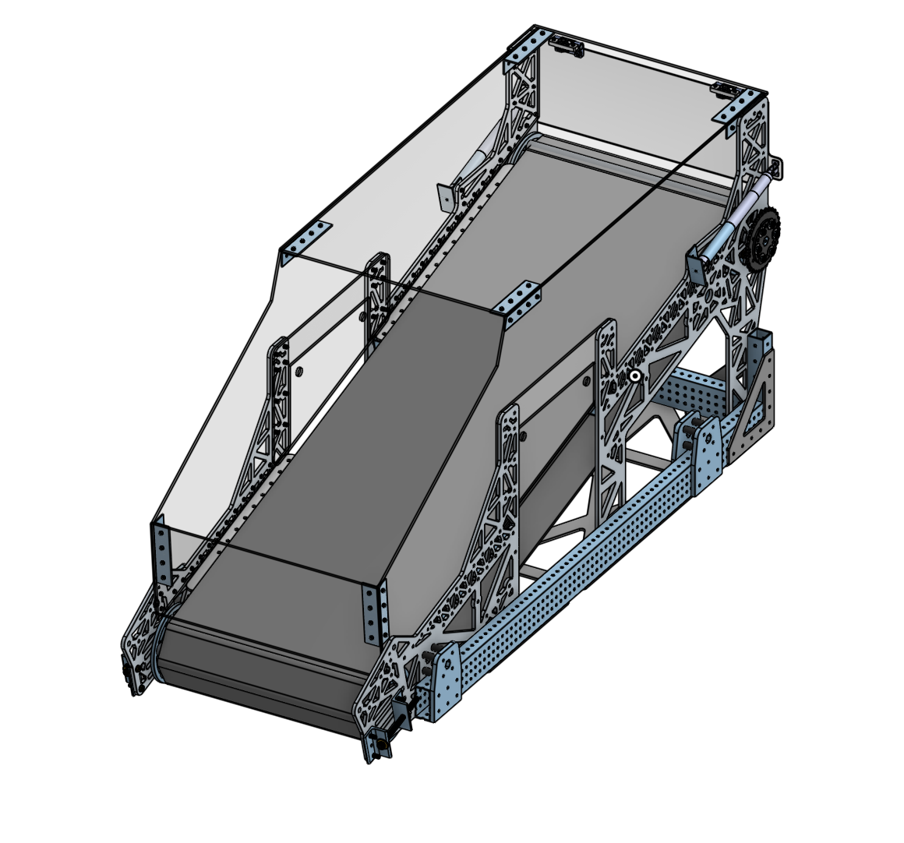
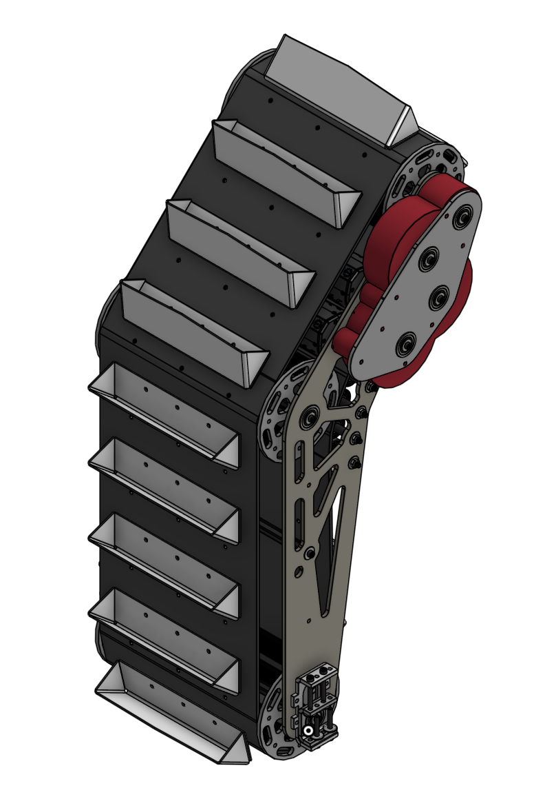
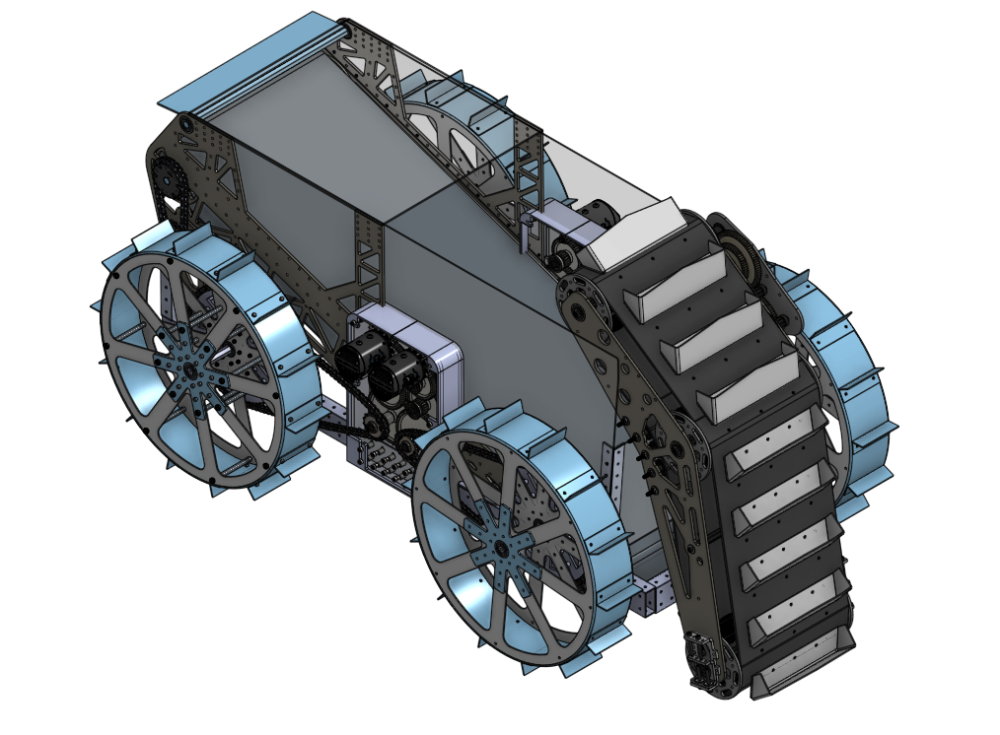
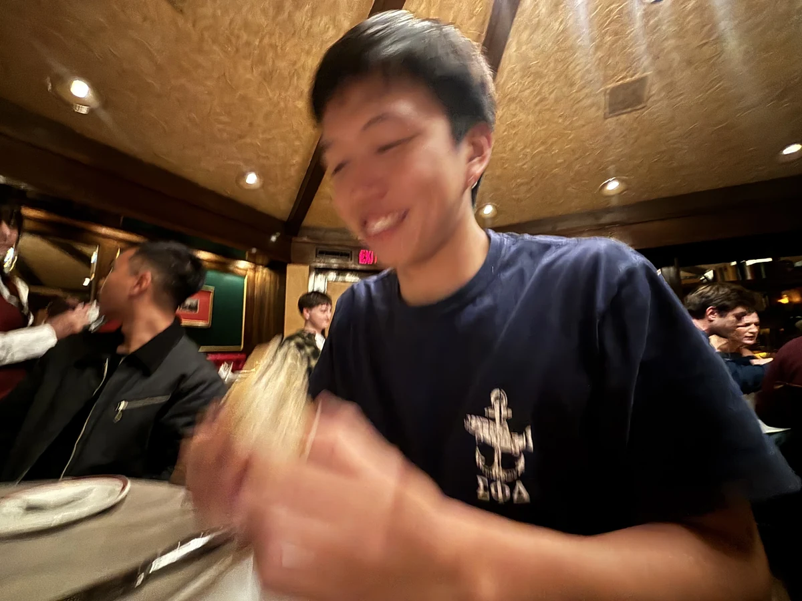

At Seagrass Robotics, we’re developing a hybrid aerial underwater
drone that combines the reach of an aircraft with the underwater
movement of a buoyancy driven glider. Our goal is a vehicle that
can fly to a site, enter the water, collect data, and return to
flight. Bringing these modes together requires closely connected
work across the airframe, buoyancy control, waterproof electronics,
and system integration.
Developed for NASA’s 2026 Lunabotics Competition, ATHENA is
designed to turn simulated lunar soil into protective berms.
Structures like these could help shield future lunar infrastructure
from debris produced during landings and launches. The project
explores how robotic excavation, transportation, and deposition
can work together to build useful structures from material already
available on the Moon.
NASA LUNABOTICS COMPETITION 2026

TEAM PLACEMENTS
Qualifiers
5th
Finals
9th

Regolith Deposition System
The deposition system needed to capture incoming regolith and keep it contained until delivery to the end zone. I designed V1 and V2 around that requirement, prioritizing material retention and capacity within the rover’s constrained design envelope. The aim was to make the available space as useful as possible while minimizing losses between collection and delivery.

Lunar Regolith Excavator
Regolith lost during transfer limits how much material a rover can ultimately deliver. Our team used a bucket ladder architecture and focused on addressing the leakage and speed tradeoffs seen in earlier designs. I co-led the design and prototyping of V1 and V2, exploring how to retain more material during the handoff to the deposition system. These prototypes formed the basis for V3, which other team members developed.

Rover System Integration
My work on ATHENA extended to how the subsystems functioned together. Transfers between mechanisms were a central design challenge: material could spill at the interface, while slowing the transfer could limit throughput. I helped integrate the subsystems with a focus on these handoffs, working to maintain a contained material path within the rover’s permitted dimensions.
BACKGROUND
About Me

I’m a mechanical engineer focused on building persistent ocean intelligence. As cofounder of Seagrass Robotics, I’m developing a hybrid aerial underwater drone to make the ocean more accessible and gather data that deepens our understanding of it.
I believe advances in AI create new possibilities for ocean exploration. At Seagrass, our vision is a hybrid platform that can gather information both above and below the ocean’s surface, moving between air and water without requiring people onsite to deploy or recover it. I believe combining these perspectives with greater autonomy could transform how we explore and understand the ocean.
I enjoy designing and building prototypes that push the boundaries of what’s possible today, turning ambitious ideas into physical systems I can test and improve.
 Seagrass
Seagrass